Aero 和燃烧模拟中可能出现基于体素的瑕疵或“锯齿”。它们通常由 voxel_fog_density 和 voxel_temperature 中的高渐变引起。它们通常在低分辨率时出现，尤其是当燃烧率较低、烟灰氧化处于启用状态，或者需要较大的时间步时。
可以通过两种主要方法来处理锯齿：
combustion_smoothness在燃烧模拟中，如果 voxel_fog_density（用于烟灰）或 voxel_combustion_rate（用于蓝色火焰）中存在锯齿，请首先尝试增加 combustion_settings 节点上的 combustion_smoothness。虽然这是模拟设置，而不是后处理，增加此值对总能量的影响应该不大。
| combustion_smoothness = 0 | combustion_smoothness = 1 |
|---|---|
| 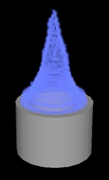 | 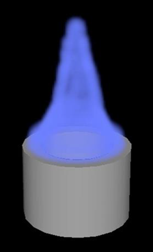 |
平滑模拟结果可以消除锯齿，而不会影响总能量和模拟流。要执行此操作，请在 simulate_aero 节点的结果与主场景的输出之间插入一个或多个 smooth_voxel_property 节点。
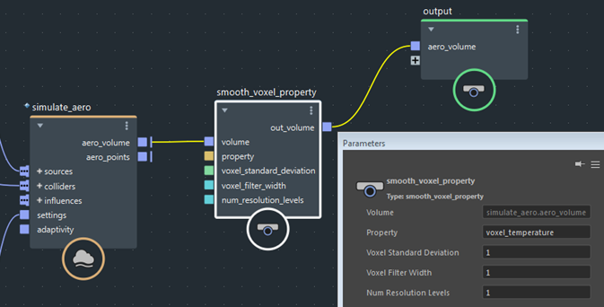
可能需要平滑的特性是 voxel_temperature 和 voxel_fog_density。尝试添加尽可能小的平滑，这样才不会移除细节。首先设置 voxel_standard_deviation = 1、voxel_filter_width = 1 和 num_resolution_levels = 1。
| 无温度平滑 | 温度平滑 |
|---|---|
| 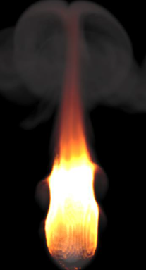 | 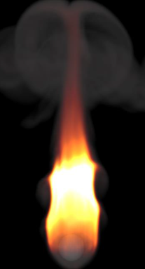 |
在某些情况下，平滑 voxel_temperature 后，您可能需要重新映射着色器中的温度，因为平滑可能会降低温度峰值。
| 无温度平滑 | 温度平滑 |
|---|---|
| 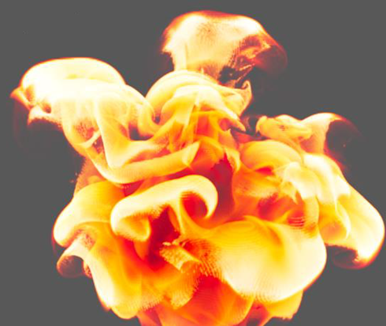 | 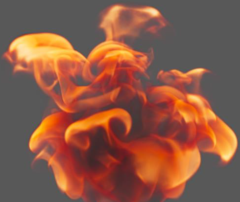 |
| 锯齿是由烟灰氧化中的高温度渐变造成的。 | 平滑后，温度峰值会降低。 |
有时，需要同时平滑 voxel_temperature 和 voxel_fog_density。特别是，这可能在使用较大的时间步时发生。在这种情况下，只需将两个 smooth_voxel_property 节点呈菊花链状连接在一起。
如果锯齿主要沿火焰边缘出现，并且饱和的白色变换为黑色，您可以使用 smooth_voxel_temperature。这是一种特殊用途的节点，不会模糊内部细节。
| 低分辨率火焰 | 有 smooth_voxel_temperature |
|---|---|
| 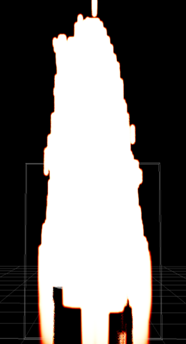 | 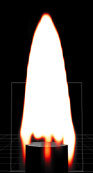 |
最后，使用运动模糊进行渲染会在一定程度上减少锯齿。
| 无运动模糊 | 有运动模糊 |
|---|---|
| 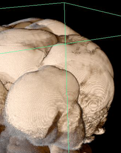 | 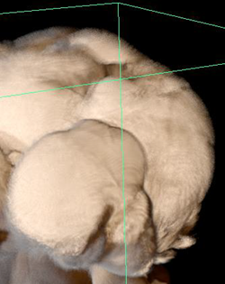 |
可以调整模拟设置，以避免产生高渐变。这会移除锯齿，但也可能会影响结果的外观和运动。
如果您对 source_air 节点上的 temperature_mode 使用默认的 set，请尝试改为使用 max。
| temperature_mode = set | temperature_mode = max |
|---|---|
| 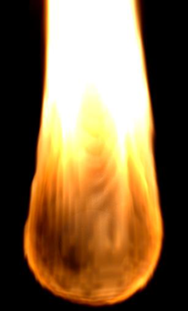 | 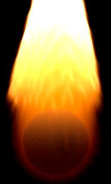 |
如果在燃料点燃的位置出现锯齿，请将 source_fuel 节点设置为可编辑，进入该节点，并将 iterate_set_properties 节点上的 fuel_mode 设置为 max。
| fuel_mode = set | fuel_mode = max |
|---|---|
| 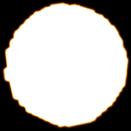 | 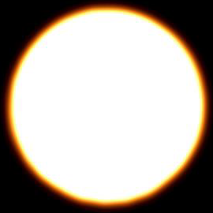 |
当分辨率和燃烧率较低时也可能会出现锯齿。当燃烧率较低时，在燃料边界的薄层区域可能会发生燃烧，并且在分辨率较低时无法很好地表示薄层区域。减小 source_air 节点上的 fluid_detail_size 以提高分辨率，或者增大 source_fuel 节点上的 burn_rate。
| fluid_detail_size = 0.007 | fluid_detail_size = 0.002 | fluid_detail_size = 0.0005 |
|---|---|---|
| 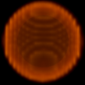 | 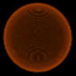 | 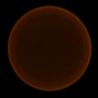 |
增加 burn_rate 还会使燃烧层变厚、变亮。
| burn_rate = 0 | burn_rate = 0.1 | burn_rate = 0.5 | burn_rate = 0.7 |
|---|---|---|---|
| 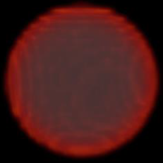 | 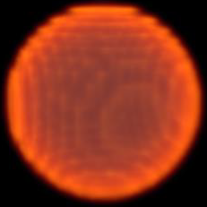 | 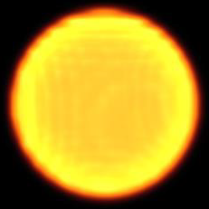 | 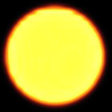 |
时间步较大也可能导致出现锯齿，尤其是在快速运动流中，如上升的烟尘。缩短时间步会导致每一帧的迭代增加，同时增加计算次数。它的成本高于平滑 voxel_fog_density，但会更好地保留细节。
要缩短时间步，请执行下列一项或两项操作：
aero_solver_settings 节点上的 time_step_size - 该选项控制流体在触发其他子步之前可以移动的体素数量。同时增加 max_steps，以便子步总数不会在过低时封口。aero_solver_settings 节点设置为可编辑，进入该节点，并增加 aero_settings 节点上的 max_transport_steps。这种方法的计算成本比调整 time_step_size 和 max_steps 低，并且往往会减少锯齿，而不影响流的逼真度。